Fond of Japan and its fascinating culture ever since junior high school, coming to study in Matsukawa’s laboratory was for me the realization of a dream.
Double nationality French and Algerian I love everything related to multiculturalism and traveling.
Coming originately from Paris I still think it is the most beautiful and attractive city in the world.
Master student of the famous Ecole Centrale de Lyon, I came to study in this laboratory thanks to a partnership with Keio University. My major is Supply Chain Management and I intend to work in this area later.
I already have experience having done an internship in Procter and Gamble in Switzerland, and spending one year doing research completed my vision and knowledge about Supply Chain Management.
It is a truly important subject for the companies today and a lot can still be done.
Furthermore spending one year in a totally different country, with a culture, language and manners that have nothing to do with what I was used until now made me think a lot and was really a rich experience.
On top of getting precious knowledge about Supply Chain management and Operations research methods, I got to discover the natural and cultural beauties of Japan.
A magical year…
Motto
“a smile makes life even more happily beautiful”
Getting knowledge about operations research
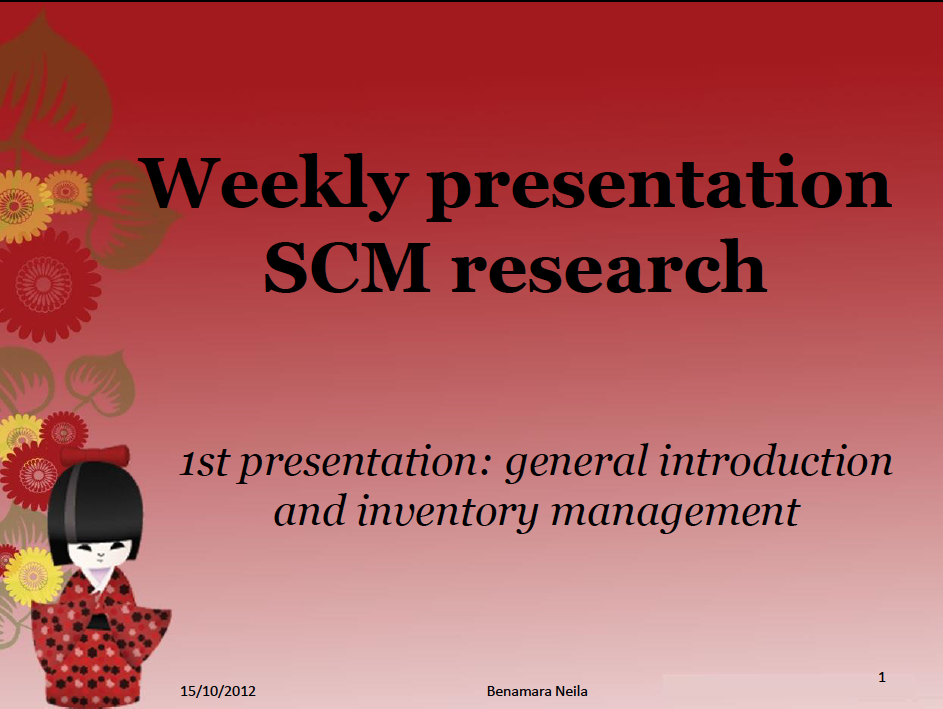
General introduction and inventory management
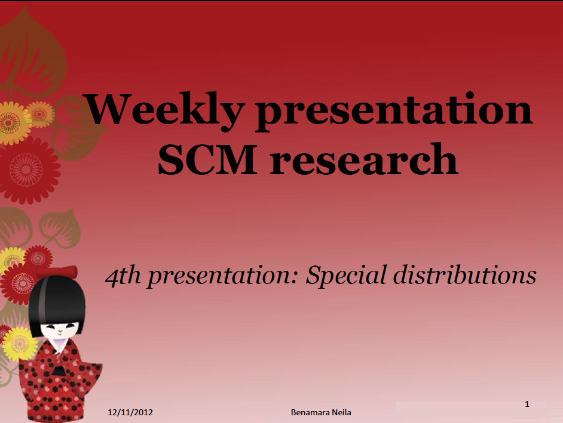
Special distributions (part 1)
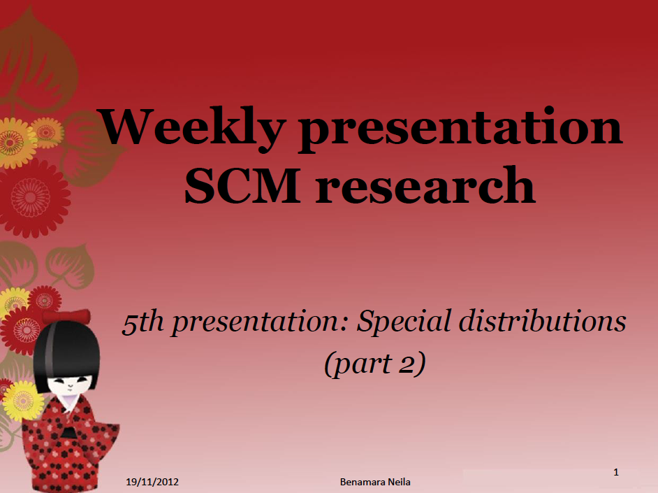
Special distributions (part 2)
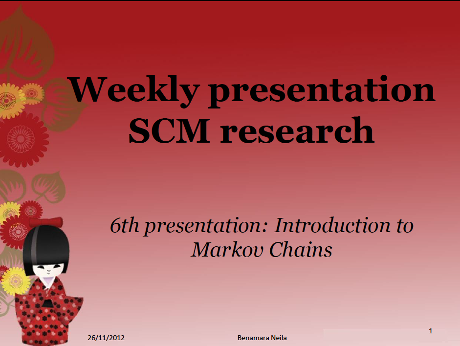
Introduction to Markov Chains
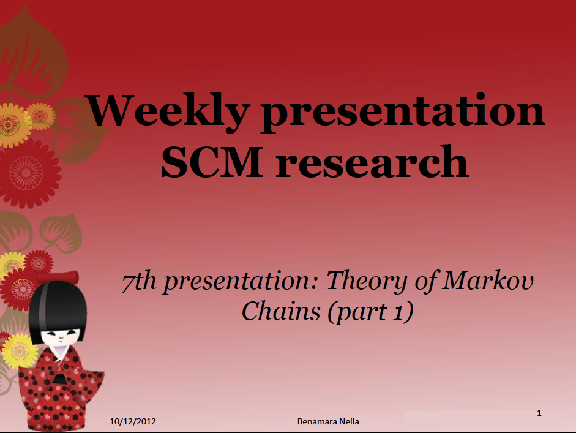
Theory of Markov Chain (part 1)
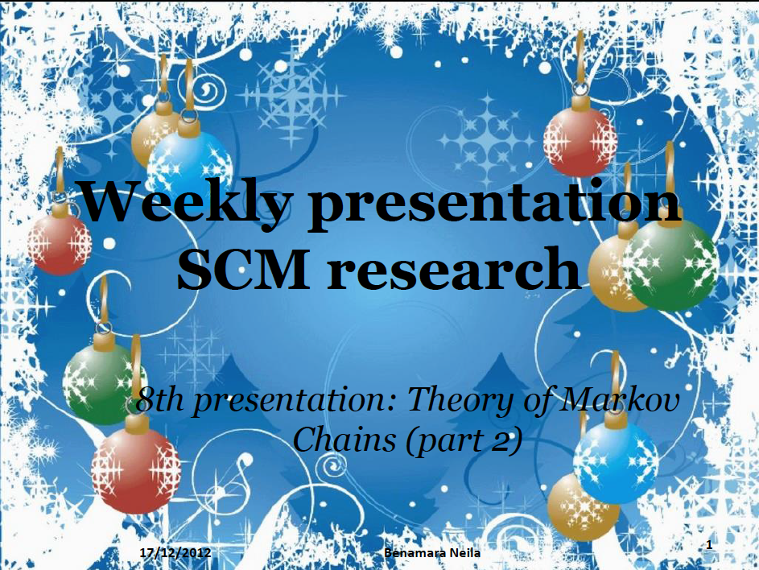
Theory of Markov Chain (part 2)
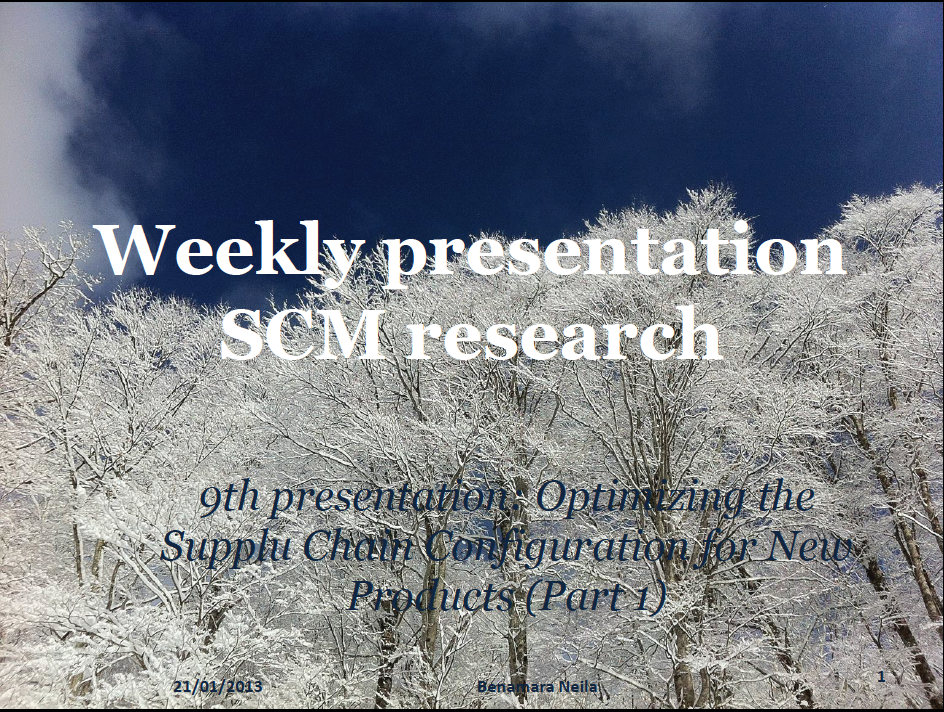
Optimizing the Supply Chain configuration for New products (part 1)
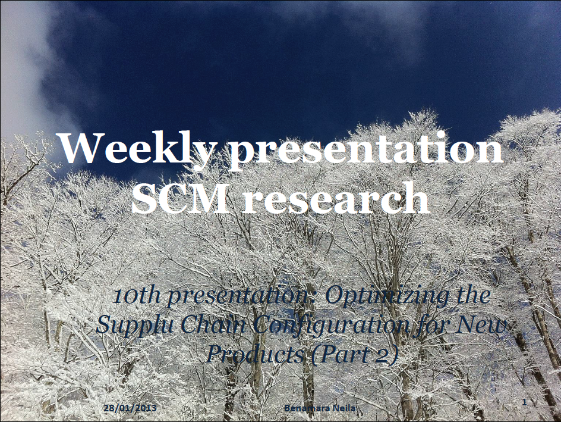
Optimizing the Supply Chain configuration for New products (part 2)
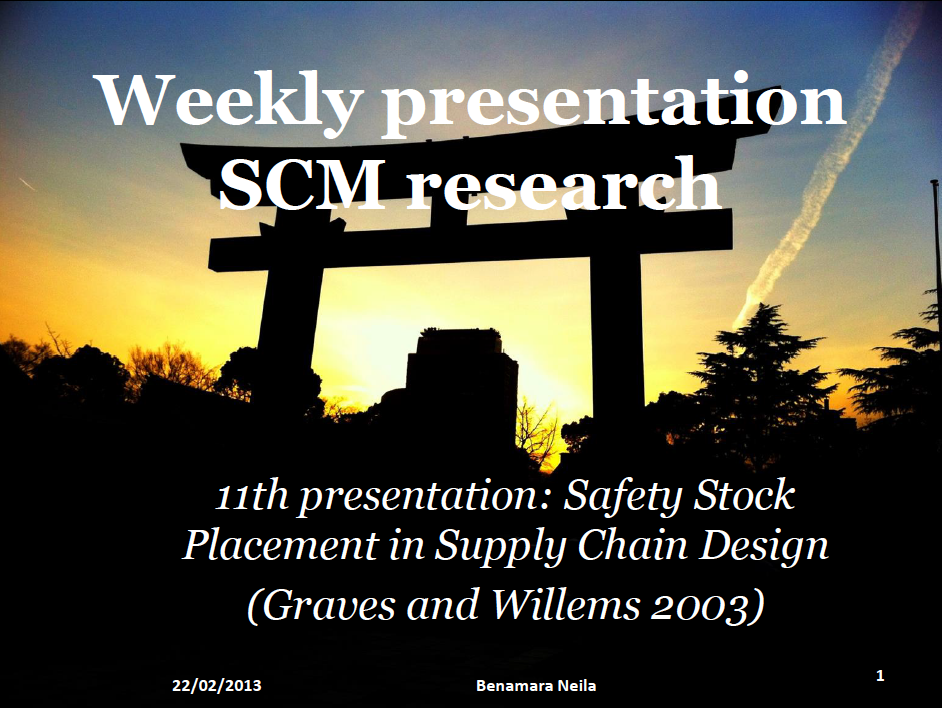
Safety Stock placement in Supply Chain design
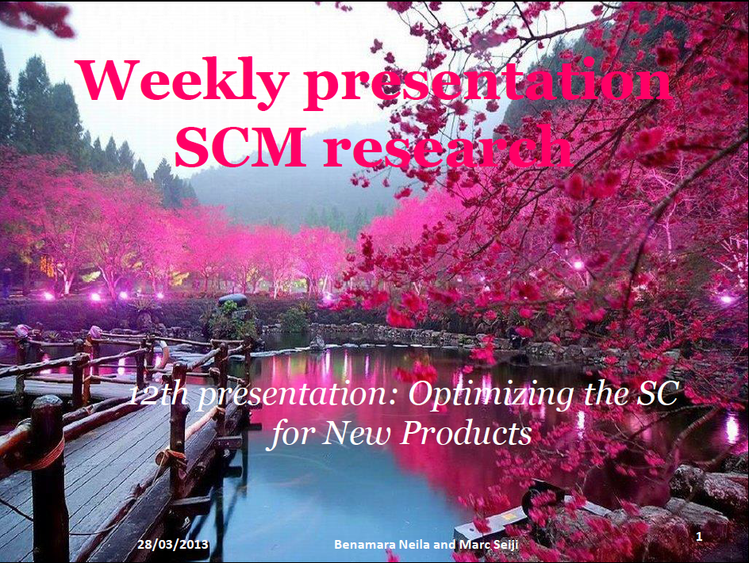
Optimizing the Supply Chain for New products
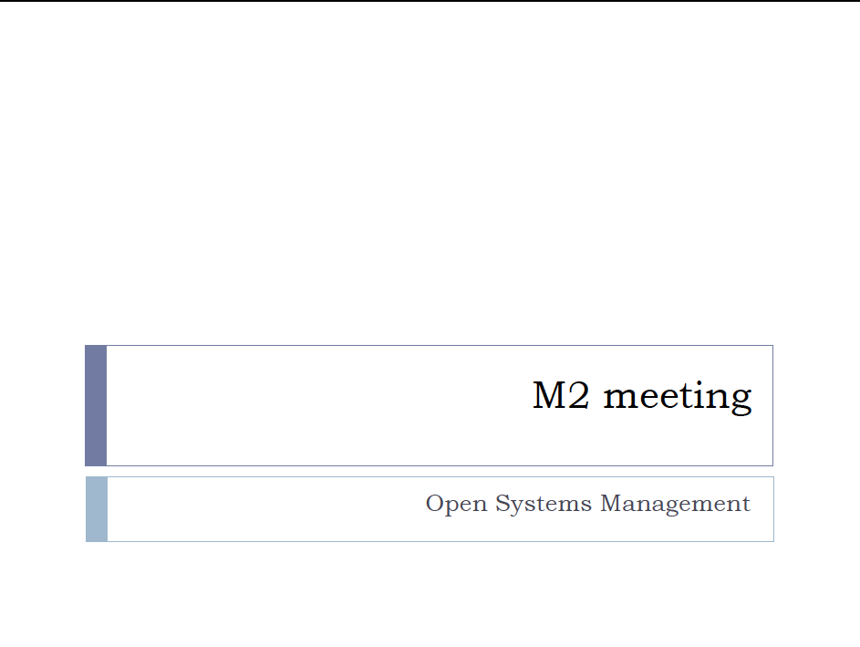
Improving Grave and Wilem’s model
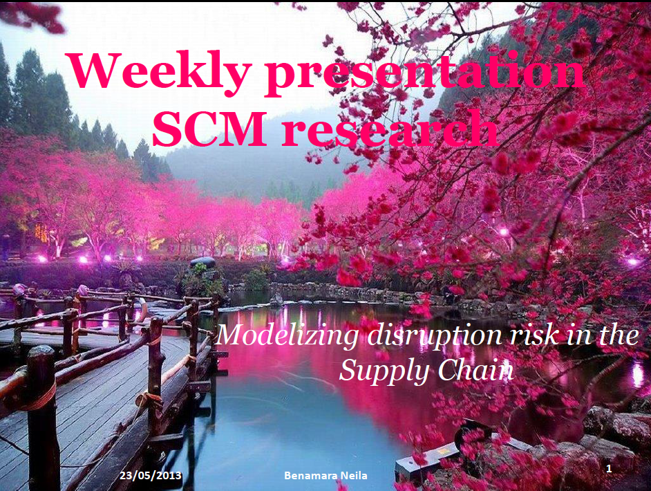
Modelizing disruption risk in the Supply Chain
Modelizing disruption risk with dual sourcing